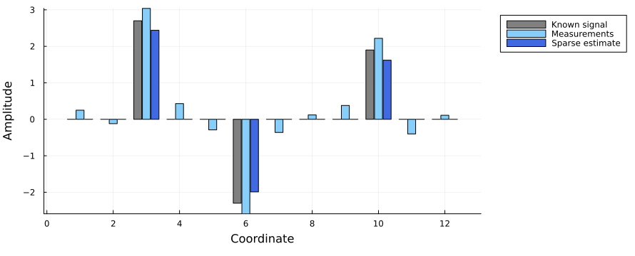

Sparse signal denoising with ADMM
The measurements c contain a few large signals and small errors on every coordinate. Estimate a sparse signal by minimizing
\[\frac{\lambda}{2}\|z-c\|_2^2+\tau\|z\|_1.\]
λ > 0 sets the weight of fidelity to the measurements, and τ ≥ 0 sets the sparsity penalty. Their ratio τ/λ is the threshold in the solution.

using ProximalBase, ProximalSolvers
signal = [0.0, 0.0, 2.7, 0.0, 0.0, -2.3, 0.0, 0.0, 0.0, 1.9, 0.0, 0.0]
noise = [0.25, -0.12, 0.34, 0.43, -0.29, -0.29, -0.36, 0.12, 0.38, 0.32, -0.40, 0.11]
c = signal + noise
λ, τ = 2.0, 1.2
f = SqrNormL2(λ, c)
g = NormL1(τ)ProximalBase.NormL1{Float64, Nothing}(1.2, nothing)Split the objective
ADMM assigns the squared distance to x and the penalty to z, with the constraint x = z. Each iteration evaluates the prox of f to update x and the prox of g to update z, then updates the scaled dual vector u to account for the mismatch. The penalty ρ sets the weight on the constraint during the iteration. Start with ρ = λ to put it on the same scale as the quadratic curvature. Changing ρ changes the iterations while the objective and its minimizer stay the same.
estimate = zeros(length(c))
method = ADMMSolver(ρ = λ, abstol = 1e-10, reltol = 1e-10)
result = solve!(estimate, f, g, method)
@assert result.converged && result.minimizer === estimate
@assert result.r_norm <= result.eps_pri && result.s_norm <= result.eps_dualCheck the fit independently
The primal residual measures agreement between x and z. The dual residual measures how far z moved, scaled by ρ. Inspect each residual against its own tolerance. For optimality, check the KKT conditions from the observations: at nonzero z[j], λ*(z[j] - c[j]) is -τ*sign(z[j]); at zero, its magnitude is at most τ. These equations also yield the soft-thresholded reference below.
reference = sign.(c) .* max.(abs.(c) .- τ / λ, 0)
gradient = λ .* (estimate .- c)
kkt = maximum(iszero(estimate[j]) ? max(abs(gradient[j]) - τ, 0) :
abs(gradient[j] + τ * sign(estimate[j])) for j in eachindex(estimate))
objective = λ / 2 * sum(abs2, estimate - c) + τ * sum(abs, estimate)
@assert maximum(abs, estimate - reference) <= 1e-8
@assert kkt <= 1e-8 && isapprox(result.minimum, objective; rtol = 1e-12)
println((iterations = result.iterations, prox_calls = result.prox_calls,
primal = result.r_norm, dual = result.s_norm, max_kkt_violation = kkt))(iterations = 34, prox_calls = 68, primal = 5.227036190712932e-11, dual = 5.319312135651766e-10, max_kkt_violation = 3.539029069798971e-10)The fit removes the low-amplitude measurements and shrinks the retained amplitudes by τ/λ. The reference and stationarity checks assess the computed optimizer. Comparing with the known signal shows the effect of that shrinkage on estimation.
using Plots
index = collect(eachindex(c))
figure = bar(hcat(index .- 0.26, index, index .+ 0.26), hcat(signal, c, estimate);
bar_width = 0.24, color = [:gray :lightskyblue :royalblue],
label = ["Known signal" "Measurements" "Sparse estimate"], xlabel = "Coordinate",
ylabel = "Amplitude", legend = :outertopright, size = (890, 360))
savefig(figure, "sparse_signal_denoising.svg")
nothingSee the ADMM contract for the accepted inputs and numerical rules.